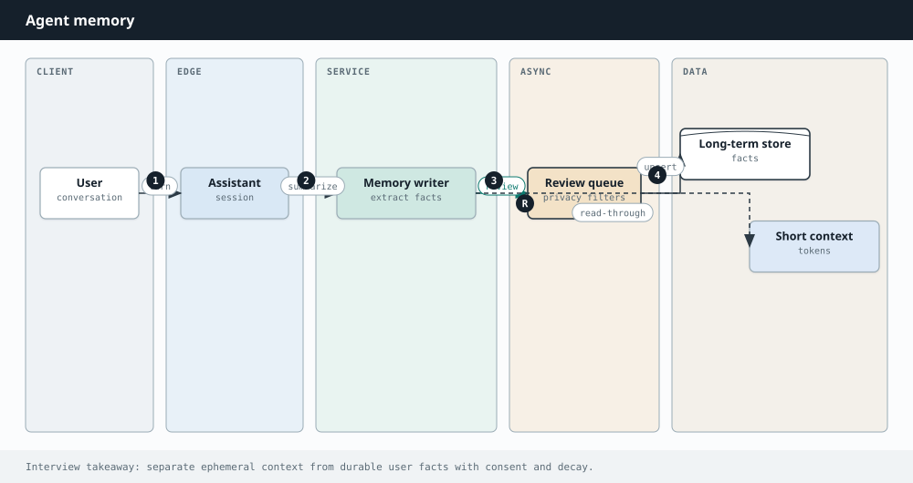

AI Engineering
Chapter 38
Memory
A model call is amnesia with perfect manners. Between requests it remembers nothing. When a user says “change that to Thursday,” the system only understands “that” if you bring the earlier turn back — or if you stored a structured fact and retrieved it on purpose.
Memory design is deciding what to keep, where to keep it, and what earns a seat on stage for the next prediction.

Working memory: the live conversation
The current transcript is working memory — immediate and fragile. When it grows you can slide a window of recent turns, summarize older turns into a running synopsis, and always pin goals, preferences, and open tasks so they never scroll away.
Long-term memory: store outside, retrieve intentionally
Anything that must survive across sessions lives in a store you control: profiles, prior tickets, extracted facts, episode summaries. At turn time you retrieve only what is relevant — the same embedding idea as RAG, but the corpus is the user’s history.
def build_context(user_id, message, store, embed):
pinned = store.get_profile(user_id)
hits = store.memory_search(embed(message), user_id, k=5)
recent = store.recent_turns(user_id, n=8)
summary = store.running_summary(user_id)
return {
"pinned": pinned,
"summary": summary,
"memories": hits,
"recent": recent,
"message": message,
}
| Memory type | Lifetime | Example |
|---|---|---|
| Working | Current session window | Last 8 messages |
| Episodic | Past conversations | Summary of last support call |
| Semantic facts | Stable preferences | Preferred language: Hindi |
| Procedural | How we do things here | Skill / SOP text |
Write path: what becomes a memory?
Not every sentence deserves storage. After a turn (or in a background job), extract candidate facts, deduplicate, and attach confidence plus a timestamp. Prefer structured writes (“timezone=IST”) over dumping raw chat. Let users see and delete memories — trust is a feature.
Budgeting the window like a producer
System policy is non-negotiable. Tool schemas are expensive but necessary for agents. Retrieved memories and RAG chunks compete with chat history. A practical order: policy → schemas → pinned profile → high-score retrieval → recent turns → older summary.
Consistency, privacy, and conflict
Users change their minds. New memories should supersede old ones with the same key. Encrypt at rest, scope by tenant, honor deletion, and avoid putting secrets into prompts that land in third-party logs.
Memory is how a stateless token engine starts to feel continuous. Build it as data engineering with care — not as an invisible brain you hope the model already has.
A day in the life of a memory write
User: “I am traveling next week; ping me on WhatsApp.” After the turn, an extractor proposes {channel: "whatsapp", valid_until: next_week}. A dedupe step sees an older channel preference and marks it superseded. The profile UI shows the change. Next session, retrieval pulls the new channel into pinned context before the model speaks. No romance — just a pipeline.
Summaries that do not lie
Running summaries drift. Mitigations: regenerate from the last N raw turns periodically; store decision bullets separately from narrative color; never let a summary erase an explicit user constraint without keeping the constraint as a fact row.
Multi-user and enterprise memory
Separate user memory from org memory (playbooks, account state). Agents acting for a team need shared stores with roles. In design interviews, draw two boxes: personal graph vs tenant knowledge, both feeding the same orchestrator under ACL checks.
Interview drill
Memory design is how assistants feel personal without blowing the context window.
More drills in the Interview Lab.
Q1. Long-running assistant memory
Remember preferences across months.
Short-term thread + long-term extracted facts + semantic recall. Lab Q10.
Q2. Wrong memory
Assistant remembered the wrong hometown.
User-editable memory; confidence scores; overwrite/tombstone; prefer explicit "Remember that…" writes over silent inference.
Q3. Privacy deletion
User requests deletion of all memory.
Delete SQL rows, vector points, cached summaries, backups per retention policy; verify via audit log.
Q4. Org vs user memory
Company playbook vs personal notes.
Separate stores and ACLs; org memory curated; user memory private; never leak across tenants in retrieval filters.
Q5. Summarization loss
What do you lose when you summarize a thread?
Exact quotes, IDs, numbers — pin critical entities into structured state before summarizing prose.